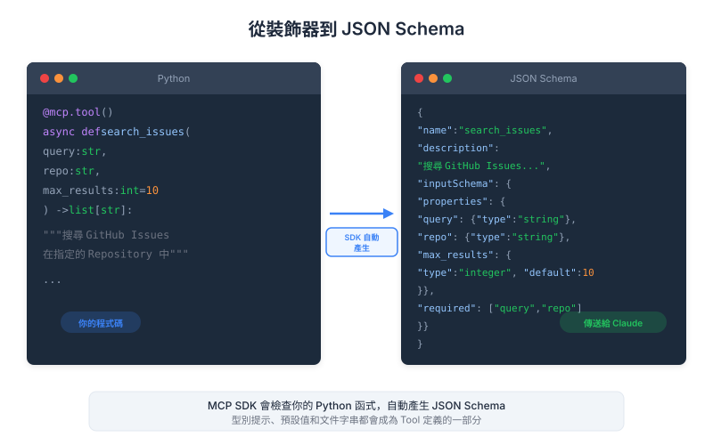

| Item | Detail |
|---|---|
| Exam Domain | D2 — Tool Design & MCP Integration (18%) |
| Task Statements | T2.1 设计与实现 tool schemas; T2.5 使用 MCP SDK 定义类型安全的 tools |
| Source | introduction-to-model-context-protocol / 02-tools-and-inspector / Lesson 06 |
Python MCP SDK（FastMCP）让你用装饰器和 type hints 定义 tools，自动生成 JSON schema 并处理验证，无需手写 schema。
FastMCP 是构建 MCP server 的官方 Python SDK。它利用 Python 的类型系统，消除了手动编写 JSON tool schema 的繁琐过程。
from mcp.server.fastmcp import FastMCP
# 创建 MCP server 实例
mcp = FastMCP("document-tools")
FastMCP 构造函数接受 server 名称字符串。此名称在连接握手时向 client 标识你的 MCP server。
Key Insight
Server 名称不只是标签——它会出现在 client 的 log 和调试输出中。选择能反映 server 用途的描述性名称（例如 "github-tools"、"document-tools"、"database-query"）。
Tools 定义为标准 Python 函数，加上 @mcp.tool() 装饰器。FastMCP 检查函数签名来自动生成 tool 的 JSON schema。
@mcp.tool()
def read_doc_contents(file_path: str) -> str:
"""读取并返回文档内容。
Args:
file_path: 要读取的文档路径。
"""
with open(file_path, "r") as f:
return f.read()
幕后发生的事：
read_doc_contentsfile_path: str → {"type": "string"}自动生成的 JSON schema 看起来像：
{
"name": "read_doc_contents",
"description": "读取并返回文档内容。",
"inputSchema": {
"type": "object",
"properties": {
"file_path": {
"type": "string",
"description": "要读取的文档路径。"
}
},
"required": ["file_path"]
}
}
Key Insight
Docstring 对 Claude 的 tool 选择准确度至关重要。模糊的 docstring 意味着 Claude 可能选错 tool 或完全忽略它。写清楚说明 tool 做什么、何时使用、返回什么的 docstring。
要更精确的参数描述，使用 Pydantic 的 Field：
from pydantic import Field
from typing import Annotated
@mcp.tool()
def edit_document(
file_path: Annotated[str, Field(description="要编辑的文档路径")],
new_content: Annotated[str, Field(description="要写入文档的新内容")],
create_backup: Annotated[bool, Field(description="是否先创建 .bak 备份")] = True
) -> str:
"""通过替换内容来编辑文档。
用 new_content 覆写 file_path 的文件。
可选择创建原始文件的备份。
"""
if create_backup:
import shutil
shutil.copy2(file_path, f"{file_path}.bak")
with open(file_path, "w") as f:
f.write(new_content)
return f"文档 {file_path} 更新成功"
关键模式：
Annotated[type, Field(...)] — 为单个参数添加丰富描述Field(description=...) 解释标志控制什么MCP tools 使用标准 Python 异常处理错误。FastMCP 捕获异常并作为错误响应返回给 client。
@mcp.tool()
def read_doc_contents(file_path: str) -> str:
"""读取并返回文档内容。"""
try:
with open(file_path, "r") as f:
return f.read()
except FileNotFoundError:
raise ValueError(f"找不到文档：{file_path}")
except PermissionError:
raise ValueError(f"权限被拒：{file_path}")
MCP tool 错误处理最佳实践：
ValueError 用于面向用户的错误（无效输入、找不到等）Key Insight
好的错误消息是 tool 设计的一部分。当 Claude 收到像"找不到文档：/path/to/file"的错误时，它能向用户解释问题或尝试替代方案。通用的"发生错误"让 Claude 无从着手。
| 手动方式 | FastMCP 方式 |
|---|---|
| 手写 JSON schema | 从 type hints 自动生成 |
| 手动验证输入 | Pydantic 自动验证 |
| Schema 和实现分离 | Schema 与代码同在 |
| 容易 schema/代码不同步 | 永远同步 |
| 冗长的样板代码 | 干净的 Pythonic 函数 |
自动验证特别强大。如果 Claude 发送 file_path: 42 而不是字符串，FastMCP 在你的函数执行前就捕获类型错误。
if __name__ == "__main__":
mcp.run()
mcp.run() 启动 MCP server，默认使用 stdio transport。使用 HTTP transport：
if __name__ == "__main__":
mcp.run(transport="sse") # HTTP 上的 Server-Sent Events
本课是 Domain 2 (18%) 的核心。重点考试领域：
@mcp.tool() 装饰器：知道它从函数签名自动生成 JSON schemaAnnotated[type, Field(...)] 如何添加参数级别的描述| Front | Back |
|---|---|
@mcp.tool() 做什么？ |
装饰 Python 函数将其注册为 MCP tool，从函数的名称、docstring、type hints 和参数描述自动生成 JSON schema。 |
| FastMCP 如何生成 tool 描述？ | 从函数的 docstring。第一行通常成为简短描述，完整 docstring 为 Claude 的 tool 选择提供详细上下文。 |
| 在 FastMCP 中如何添加参数描述？ | 使用 Pydantic 的 Annotated[type, Field(description="...")]，或从 docstring 的 Args 部分。 |
| Tool 抛出 ValueError 时会发生什么？ | FastMCP 捕获它并作为错误响应返回给 MCP client。Claude 然后看到错误消息并决定如何响应。 |
| FastMCP 如何处理输入验证？ | 基于 type hints 使用 Pydantic 自动验证。如果 Claude 发送错误类型的参数，错误在函数执行前被捕获。 |
FastMCP("name") 创建什么？ |
一个带有指定名称的 MCP server 实例。名称在连接时向 client 标识 server，并出现在 log 中。 |
| FastMCP 相对于手动 JSON schema 编写的优势是什么？ | 从 type hints 自动生成 schema、自动输入验证、schema 永远与代码同步、大幅减少样板代码。 |
| 在 FastMCP 中如何让 tool 参数变可选？ | 在函数签名中给它默认值。有默认值的参数在生成的 JSON schema 中变成可选。 |